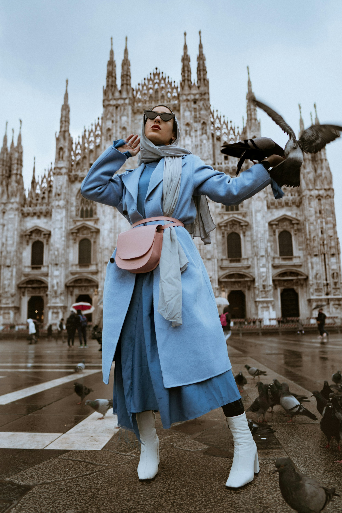
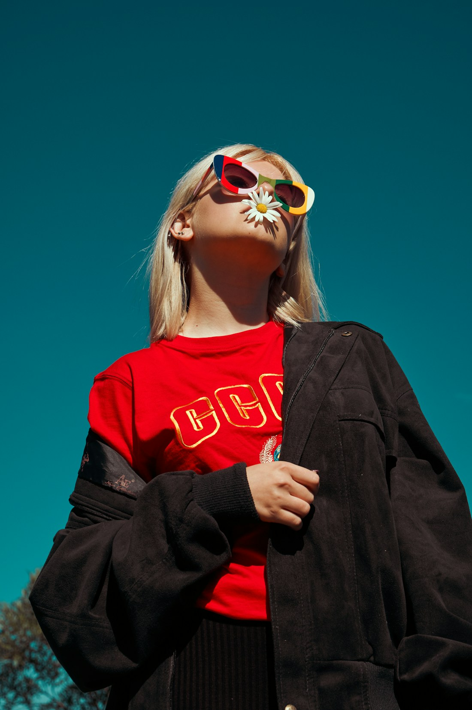

Made with
intention. Worn
around the world.
A premium garment export house creating considered collections through craft, capability and a commitment to doing things better.
Explore collections ↗01 — 06 SCROLL TO DISCOVER ↓
We bring ideas to life, beautifully.
From the first thread to the final finish, Aurel partners with global brands to create apparel that balances design sensibility, dependable execution and enduring quality.
Discover our story ↗
15+YEARS OF EXPERTISE
12GLOBAL MARKETS
360°PRODUCT DEVELOPMENT
01QUALITY-FIRST MINDSET
Collections, thoughtfully
considered.

Precision in every process. Care in every detail.
Our integrated approach connects product development, sourcing, production and quality assurance into one seamless experience.
Inside our process ↗